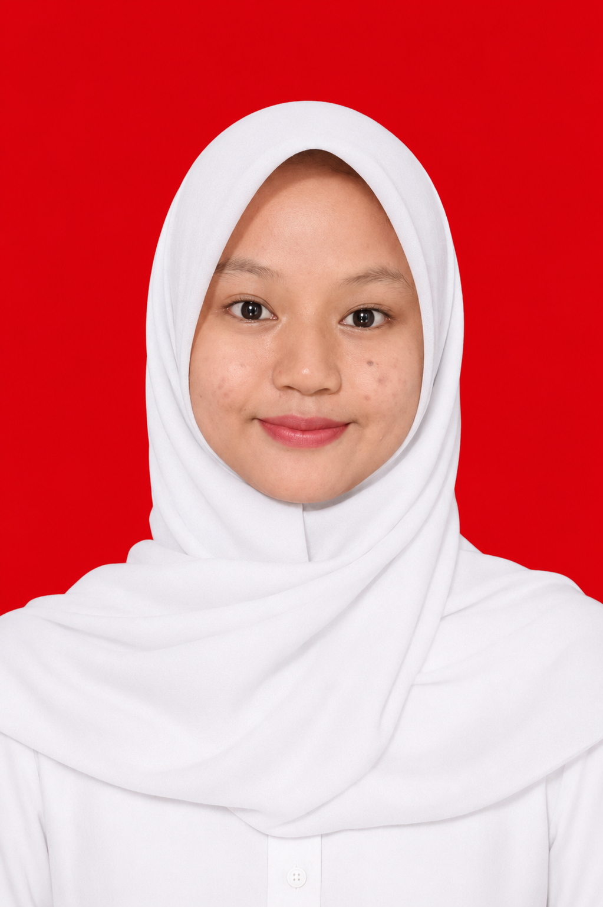

Mengubah ide menjadi tampilan web yang rapi, intuitif, dan fungsional.
Proyek SayaSiswi SMK Negeri 1 Jenangan Ponorogo, dari Konsentrasi Keahlian Rekayasa Perangkat Lunak (RPL) yang berdedikasi dalam pengembangan web dari dasar. Saya terbiasa merancang alur dan pengalaman pengguna terlebih dahulu sebelum menulis kode. Pendekatan ini membantu saya menghasilkan tampilan website yang rapi, fungsional, dan mudah digunakan.
Toko Rajut yang berbasis Website dan dilengkapi fitur filter kategori, pencarian produk, dirancang dengan alur pengguna yang rapi dan responsif.
Lihat Proyek